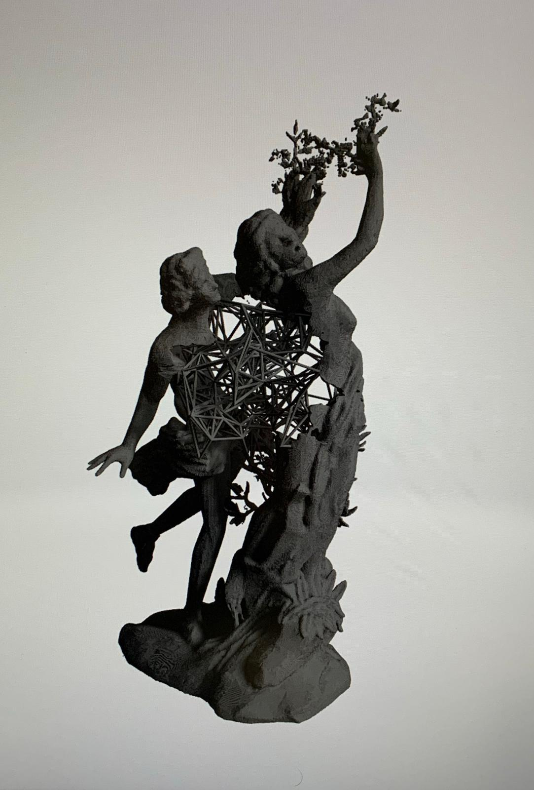
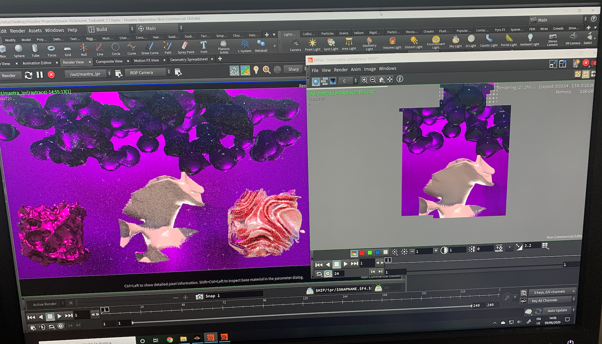
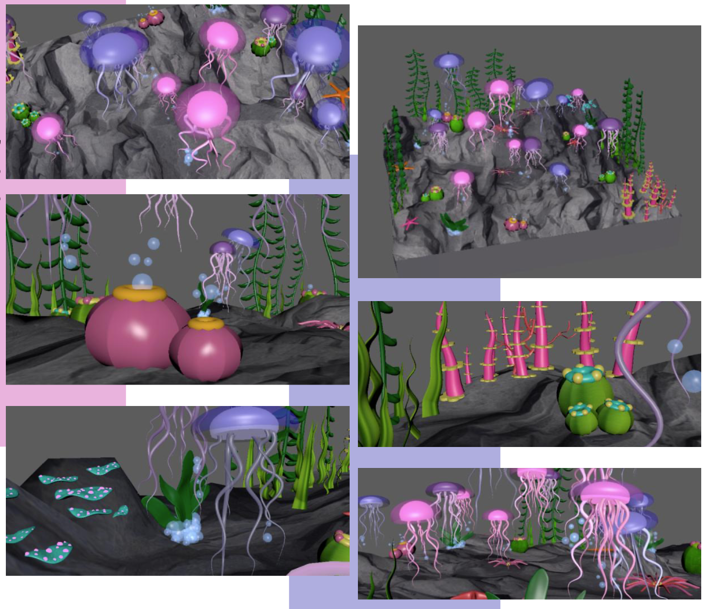
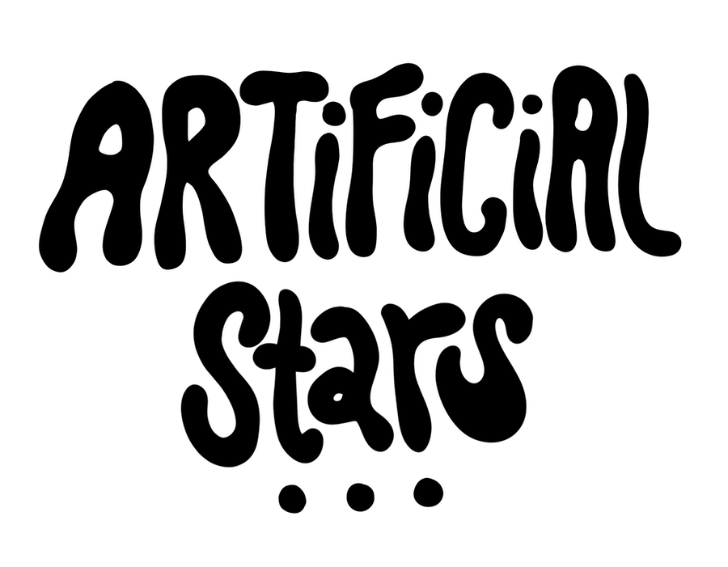
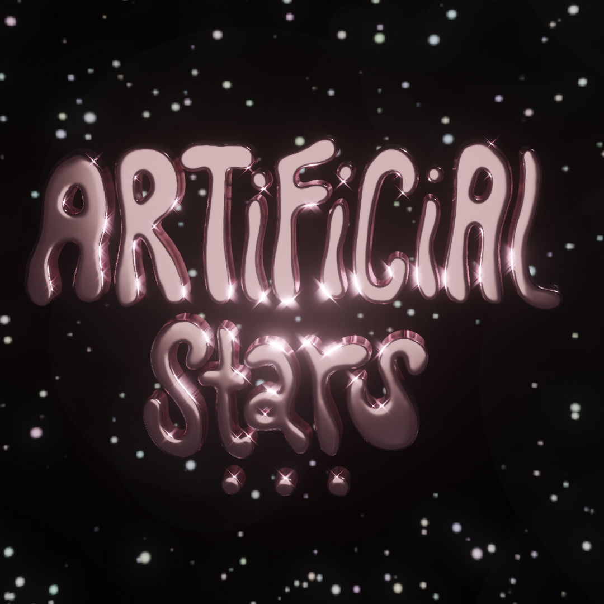
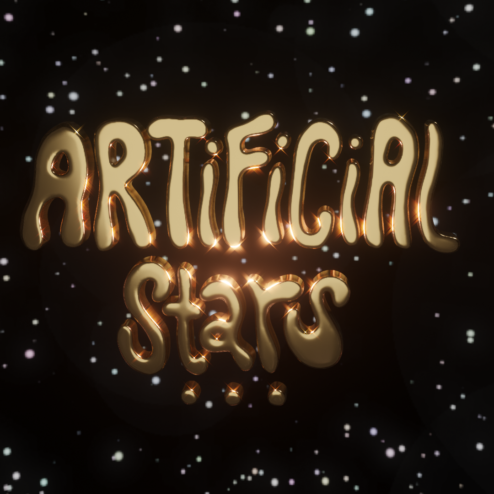
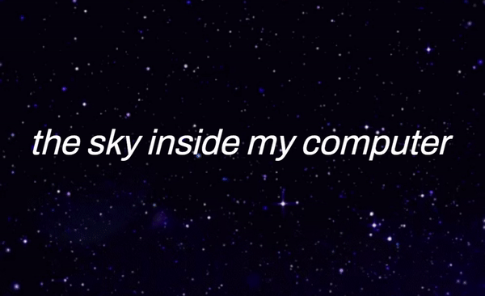

This week we learned about 2D and 3D modelling softwares. We were taught the basics of these two kinds of mediums and learned the fundamental file formats and vocabulary. We discussed the primary differences between vector images and rasterized images in the 2D world, then NURBS and meshes. I was lucky to feel confident in all the information they were providing us, because my bachelor’s degree was focused on these topics, including 2D graphics and 3D modelling. I already knew all about the formats, anti-aliasing, Blender and compressing but it was nice to have a refresher.
I am excited to work on 3D models again, and I may be rusty because it’s been a while since I’ve used them. The programs I know best are MAYA, Blender, Houdini and Unreal Engine. Here are some examples of my previous work:
I used Unreal Engine together with Megascans and model I made in Houdini, with a short soundtrack I also created.

This is the 3D model I made in Houdini for the above video. I selected a copyright-free statue from a website that 3D scanned sculptures in museums. Then I imported in Houdini and made some modifications to it (mainly reduced the size and remeshed it, because it was far too heavy for my computer to handle). Finally I created a boolean in between the two statues and modelled a weblike shape.
Below is a picture of some more experiments using Houdini. I really enjoy the procedural nature of the program, and how it isn't destrcutive and you can change it at any point.


Various examples of previous 3D modelling work which I like (above: Houdini, below: MAYA)
Our assignment for this week was to create a 3D model of our choice, somehow related to our projects. Since I have been fascinated by stars and constellations recently, I decided to get inspiration from that and proceed with whatever ideas came to mind.
I haven’t worked as much with blender as I have with other programs, so I wanted to familiarize myself with it more. I found some great tutorials which I partially followed and then used my own twist. Recently, my projects have revolved around the sky, constellations and a sense of commonality, so that is what I tried to represent in the work.
I had never worked with text in 3D softwares, so I decided I wanted to work with that. I actually did the assignment in the reversed order, because I began sketching in a 2D software only to import if afterwards in a 3D software and create the graphics. I used procreate on my iPad to create a vector image of the text that I would then extrude and play around with in Blender. I exported it in .png then converted it into a .svg file for it to be complatible with Blender's imports. This is what I designed:

I imported the .svg in Blender, extruded it, voxalised it, played around with the smoothness and explored the sculpture tab, which I had also never used before. I familiarised myself with some of the tools and then began to try out various settings on the textures and lighting. The look I wanted to achieve was a shiny chromatic effect.
I then imported a background image of a procedurally-made star sky, also made with Blender. Finally I experimented with the compositing tab and added some glare and filters to make the model look even more shiny. Here are two iterations of the final result:


These are the tutorials I followed as a base for the model:
And finally, the bonus output, a gif which represents the project theme. It surprisingly took me longer than I initially expected:
